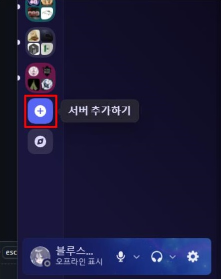
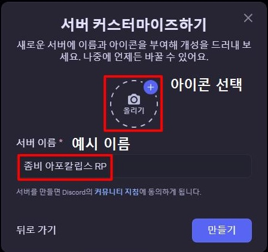
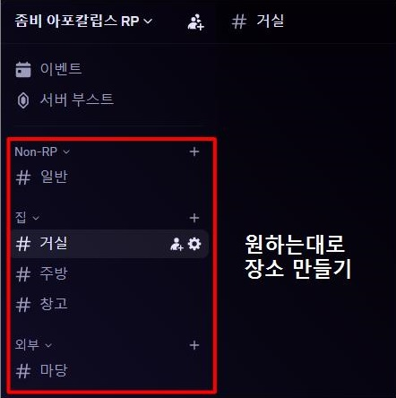
https://discord.com/developers/applications
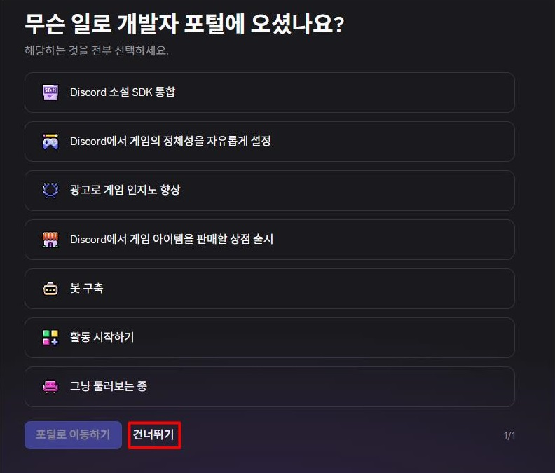
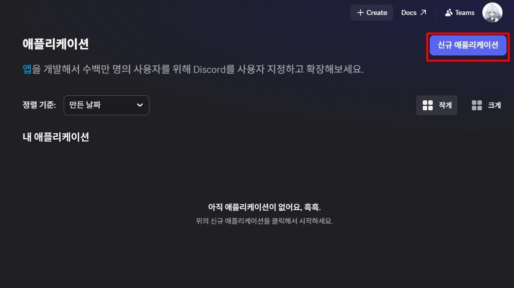
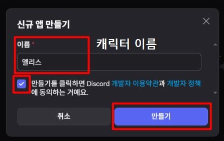
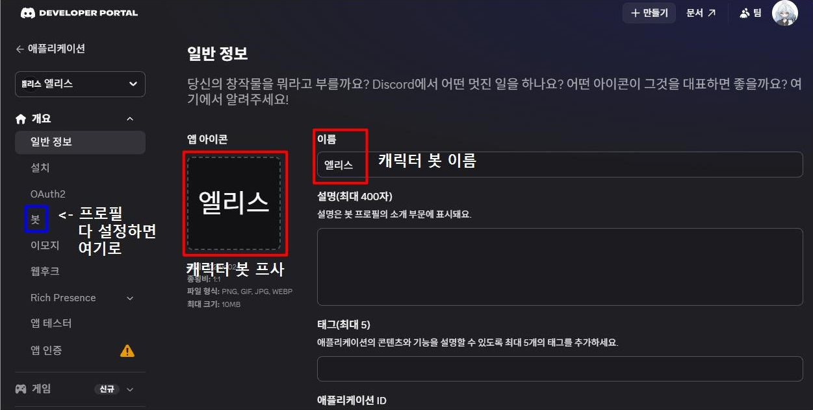
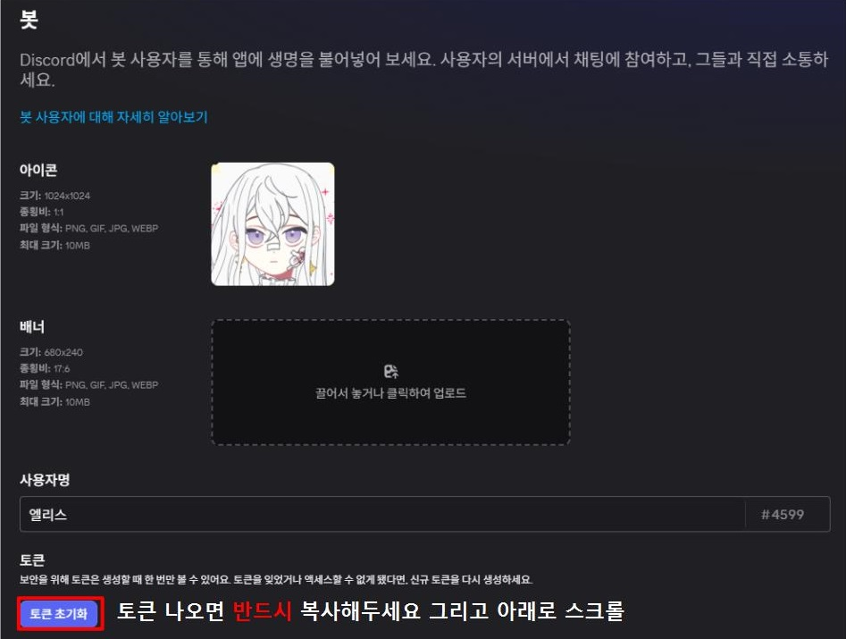
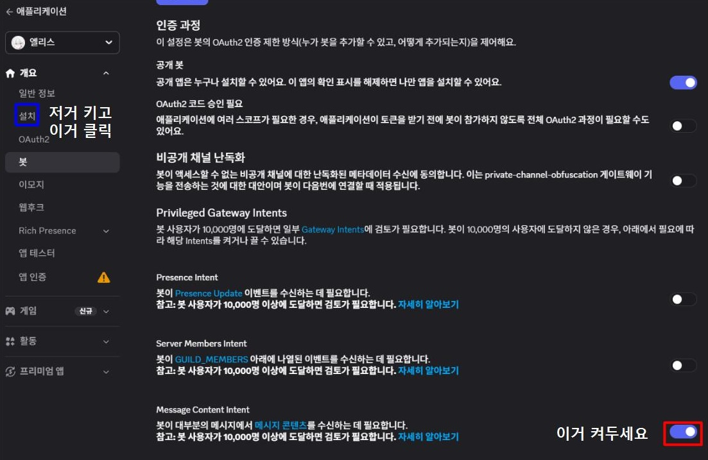
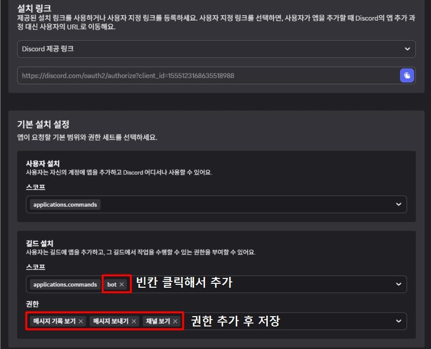
+ '채널 관리' 권한도 넣어주세요!
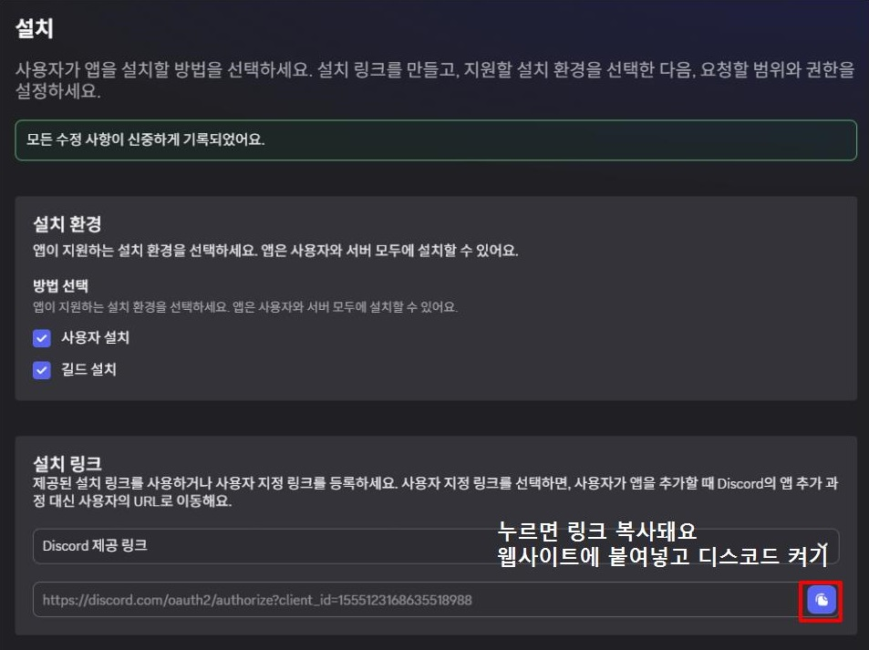
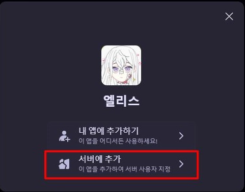
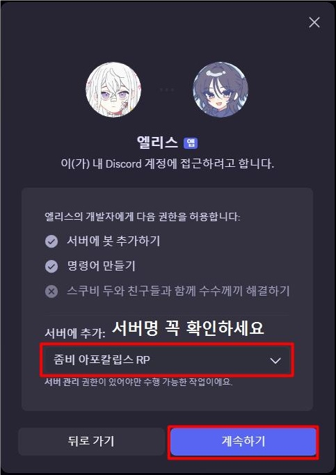
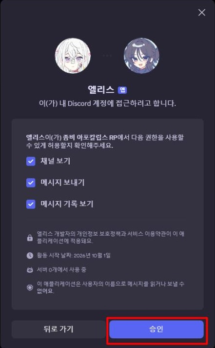
캐릭터 수만큼 (상태봇을 사용할 거라면 상태봇도) 생성해주시면 됩니다.
상태봇은 '링크 임베드' 권한을 추가로 넣어주셔야 합니다.
https://platform.openai.com/api-keys
GPT를 사용하기 때문에 이 프로그램의 설치와는 별도로 OpenAI API 사용료가 발생합니다.
ChatGPT Plus 구독이 아닙니다!! 위 링크에서 충전하셔야 합니다.
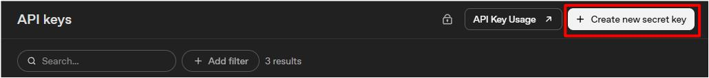
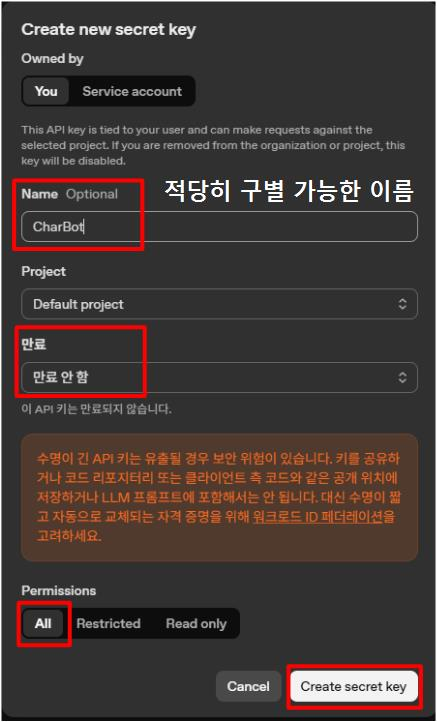
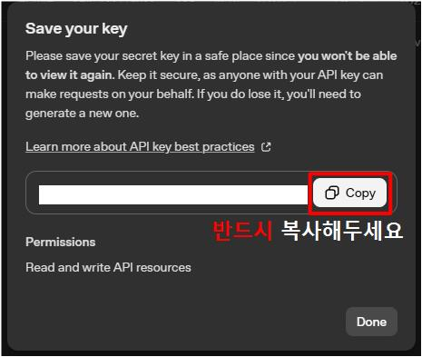
https://github.com/BS0817/generic-character-rp-bot/releases
Generic-Character-RP-Bot-Windows.zip ← 이 파일을 다운받으시면 됩니다.
압축을 풀어주세요.
RPBot_Setup.exe를 실행해주세요.
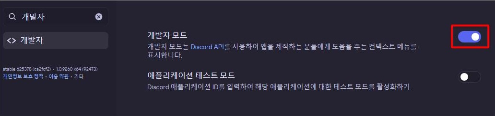
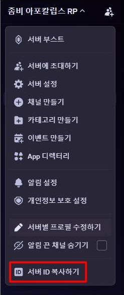
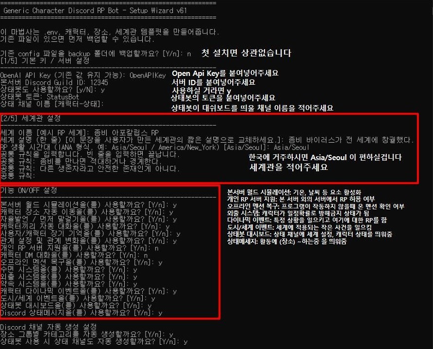
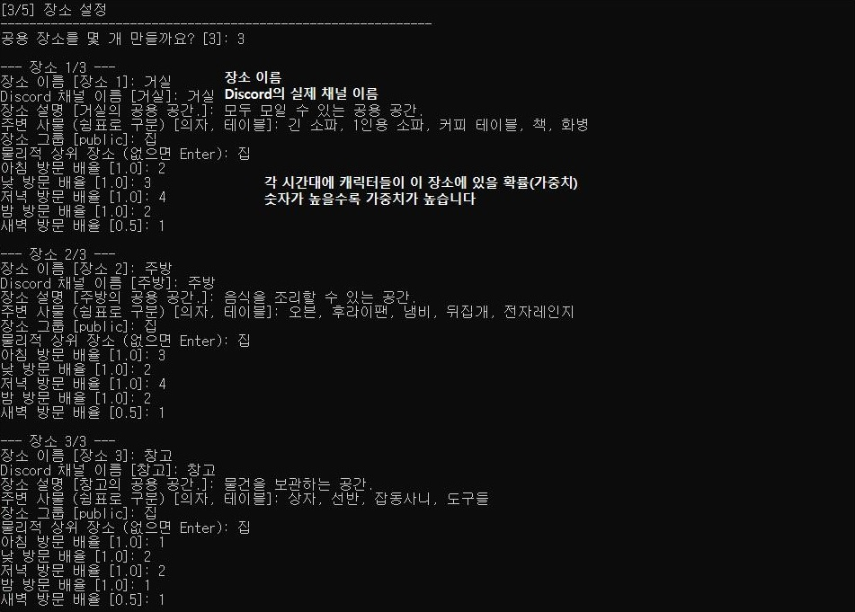
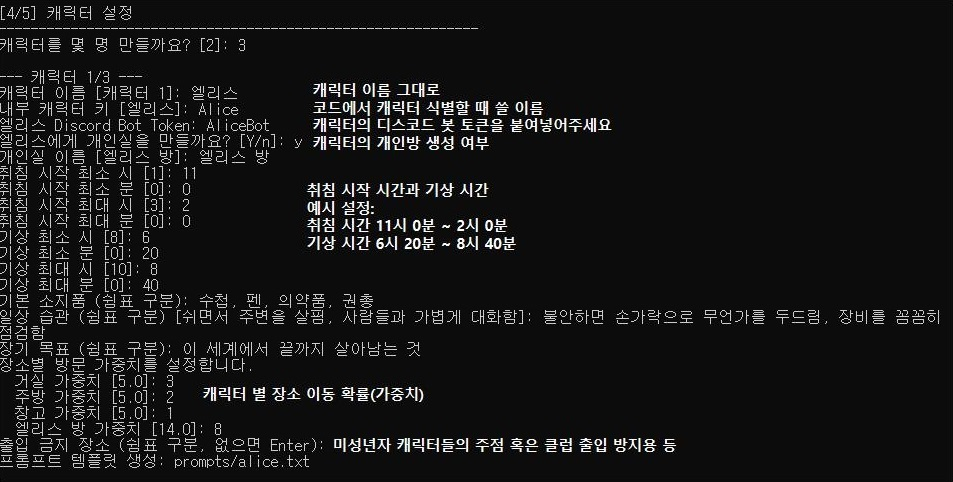
Generic-Character-RP-Bot-Windows\prompts로 들어갑니다.
각 캐릭터들의 설정에 맞게 템플릿으로 생성된 .txt 파일을 수정합니다.
간단합니다. RPBot.exe를 더블클릭해서 한 번 실행해 주세요.
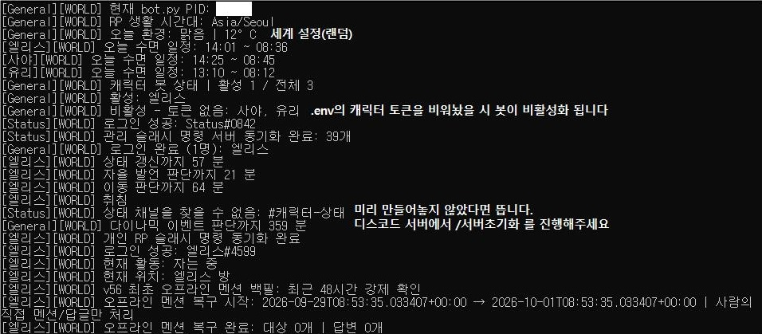
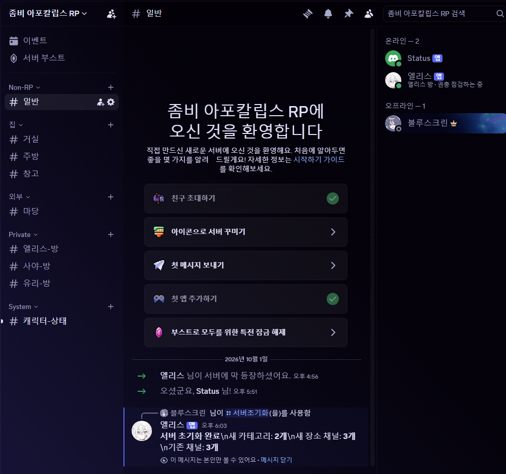
실행하고 나면 위와 같이 채널이 생성된 것을 볼 수 있습니다.
캐릭터를 @멘션하여 말을 걸어보고, 정상적으로 답하는지 보면 됩니다.
그 이후엔 봇이 일정 시간마다 자율 발언을 하고, 같은 장소에 있는 다른 캐릭터를 멘션하여 이야기를 시작할 수도 있습니다.